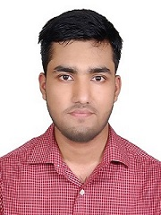

MOHAIMENUR RAHMANBlock-C, Road-6, House-167, R/A
Mobile: 01317616888
E-mail: mohaimenur888@gmail.com |
 |
...................................................................................................................................................................................................
Job Objective
To secure a challenging position in a reputable organization to expand my learnings, knowledge, and skills and making
a significant contribution to success of the company.
Academic Credentials
| Degree |
Concentration/Major |
Board |
Passing Year |
Result |
| B.S.c |
CSE |
Dhaka |
Studing |
3.76 |
| HSC |
Science |
Dhaka |
2017 |
5.00 |
| SSC |
Science |
Comilla |
2015 |
5.00 |
Award of Excellence (IF ANY)
- Scouts award
- Eye camp award
- Blood camp award
Relevant Coursework (MUST BE RELEVANT TO THE JOB YOU ARE APPLYING FOR)
- English Reading Skills & Public Speaking
- English Writing Skills & Communications
- Writing for Arts and Social Science
Communication and Professional Skills
- Fluent in Bangla and English — both verbal and written.
- Skilled in public speaking and multimedia presentation
- Efficient in all sorts of academic and official correspondence
- Have the ability to work independently as well as in team. Can work with people of all levels
and motivate them to get things done.
- Have the ability to work under pressure/any circumstances.
Computer Skills
- Windows 98/XP/7/10, Microsoft Office 97/2000/2003/2007/2010/2013.
- Internet based research and work
- Graphics design.
Personal Details (NOT MUCH NECESSARY)
| Father |
: |
IQBAL ANSARI |
| Mother |
: |
MESHBAHUNNEESA |
| Date Of Birth |
: |
14.07.1998 |
| Marital Status |
: |
NOT MARRIED |
| Blood Group |
: |
‘0’ POSITIVE |
| Interest |
: |
Computer based work |
| Nationality |
: |
Bangladeshi |
I, hereby confirm that the above information is true and correct to the best of my knowledge.